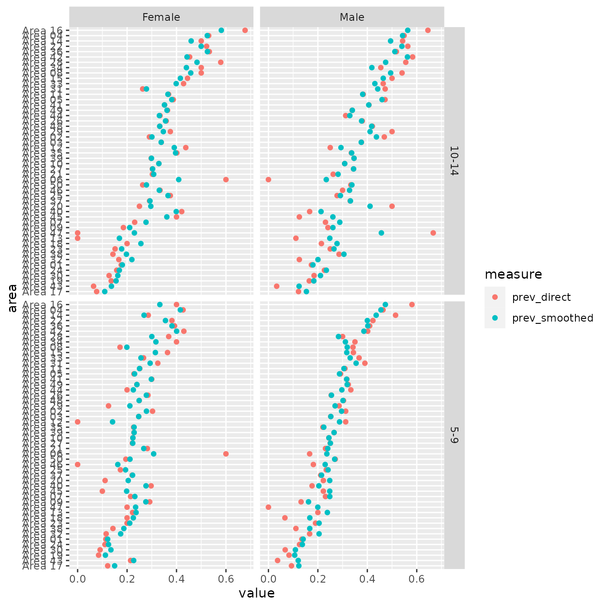

Introduction to Package 'smoothscale'
smoothscale-intro.RmdPackage smoothscale contains two functions for doing simple small area estimation with data that has sampling errors and/or measurement errors. This vignette demonstrates the use of the two functions, using some synthetic data.
First we load the package.
We will be using the dataset syn_census.
syn_census
#> # A tibble: 200 × 5
#> area age sex child_labour all_children
#> <chr> <chr> <chr> <int> <dbl>
#> 1 Area 01 5-9 Female 42 368
#> 2 Area 02 5-9 Female 10 33
#> 3 Area 03 5-9 Female 112 453
#> 4 Area 04 5-9 Female 151 354
#> 5 Area 05 5-9 Female 23 101
#> 6 Area 06 5-9 Female 3 5
#> 7 Area 07 5-9 Female 3 14
#> 8 Area 08 5-9 Female 6 35
#> 9 Area 09 5-9 Female 14 48
#> 10 Area 10 5-9 Female 422 1889
#> # ℹ 190 more rowsThe dataset contains synthetic (i.e. fake) data, but the data has a similar structure to real census data. For each combination of area, age, and sex, the dataset has counts of children involved in child labour, and counts of all children.
The function smooth_prob() has two main arguments:
-
countis the count variable that needs to be smoothed, in our case, counts of child labour -
sizeis the number of respondents from which counts were draw, in our case, counts of all children in the census file.
The function produces a smoothed version of the count
variable.
smoothed <- smooth_prob(x = syn_census$child_labour,
size = syn_census$all_children)
head(smoothed)
#> [1] 0.1205323 0.3007721 0.2486283 0.4217355 0.2356759 0.3776814Function smooth_prob() pulls prevalences (ie counts
divided by size) towards the overall average. We know, however, that
child labour is likely to vary by age and sex. It would be better to
smooth each combination of age and sex towards their own average.
A convenient way to smooth within combinations of other variables is to use functions contained in the dplyr package (part of thetidyverse.)
library(dplyr)
#>
#> Attaching package: 'dplyr'
#> The following objects are masked from 'package:stats':
#>
#> filter, lag
#> The following objects are masked from 'package:base':
#>
#> intersect, setdiff, setequal, union
smoothed_agesex <- syn_census |>
group_by(age, sex) |>
mutate(prev_direct = child_labour / all_children,
prev_smoothed = smooth_prob(x = child_labour,
size = all_children)) |>
ungroup()
smoothed_agesex
#> # A tibble: 200 × 7
#> area age sex child_labour all_children prev_direct prev_smoothed
#> <chr> <chr> <chr> <int> <dbl> <dbl> <dbl>
#> 1 Area 01 5-9 Female 42 368 0.114 0.121
#> 2 Area 02 5-9 Female 10 33 0.303 0.278
#> 3 Area 03 5-9 Female 112 453 0.247 0.247
#> 4 Area 04 5-9 Female 151 354 0.427 0.416
#> 5 Area 05 5-9 Female 23 101 0.228 0.230
#> 6 Area 06 5-9 Female 3 5 0.6 0.308
#> 7 Area 07 5-9 Female 3 14 0.214 0.231
#> 8 Area 08 5-9 Female 6 35 0.171 0.199
#> 9 Area 09 5-9 Female 14 48 0.292 0.276
#> 10 Area 10 5-9 Female 422 1889 0.223 0.224
#> # ℹ 190 more rowsWe calculate and plot prevalences, using some more tidyverse packages and functions,
library(tidyr)
library(forcats)
library(ggplot2)
data_for_plot <- smoothed_agesex |>
pivot_longer(col = c(prev_direct, prev_smoothed),
names_to = "measure") |>
mutate(area = fct_reorder(area, value))
ggplot(data_for_plot,
aes(x = value, y = area, color = measure)) +
facet_grid(vars(age), vars(sex)) +
geom_point()